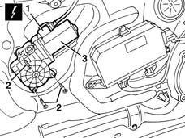

7005M28 front side door electrically operated window motor - r r with door panel-mount frame removed
- Path
- Procedures > 70 FITTINGS > 7005 PASSENGER COMPARTMENT FRONT SIDE DOORS > 7005M front electric windows > 7005M28 front side door electrically operated window motor - r r with door panel-mount frame removed
- Kind
- repair procedure (removal / refitting; the operation number is the code)
- Applies to
- all engines; all production periods
- Interactive page
- https://sloeber94.github.io/elrnDB-lYpsln/en/#/2429514
Applies to: all engines; all production periods
 Removing
Removing
 Refitting
Refitting1. Disconnect the electric window motor connection.
 | Name | Connector |
|---|---|---|
1 | Driver's front electric window motor |
| Name | Connector |
|---|---|---|
1 | Front passenger side electric window motor |
2. Undo the bolts.
3. Remove the motor releasing the splined shaft.

Applies to: all engines; all production periods
Refitting
RemovingCheck that the motor is undamaged.
Connect the electrical connection.
Position the motor and secure with bolts.
Topics linked from this page (2)
- N60 Driver's front electric window motor
- N61 Front passenger side electric window motor ( FRONT PASSENGER DOOR )